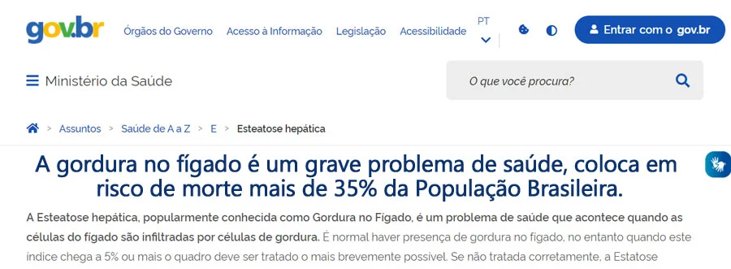
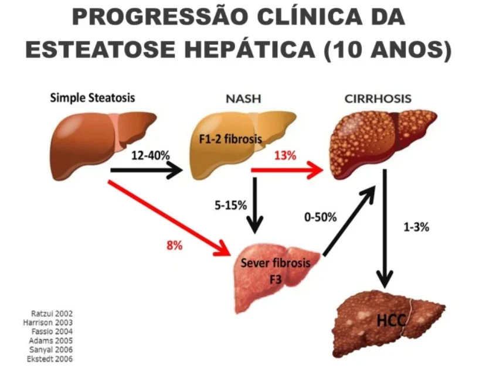
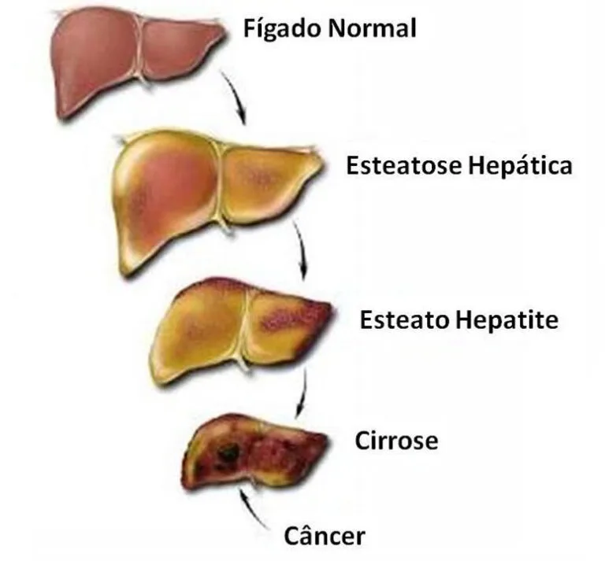

- Essa Informação Precisa Chegar a Todos -
Um método Simples e Prático Cientificamente Comprovado Para Eliminar a Gordura
No Fígado De Forma Natural
Tenha Mais Saúde, Ganhe Anos de Vida e Evite Doenças Como Câncer, Diabetes, Colesterol Alto, Fadiga, Depressão, Confusão Mental, Entre Muitas Outras.
Olá,
Se você está lendo esse artigo, talvez tenha sido
diagnosticado ou suspeite que tem problemas com seu
fígado, então está no lugar certo.
Já passei por isso, e vou te contar como reverti completamente meu
fígado gorduroso, acabei com as dores nas articulações,
eliminei a fadiga e ainda perdi peso de forma natural.
E o melhor, consegui fazer
isso seguindo um cronograma de tratamento de 28 dias sem uso de remédios, seguindo esse antigo método
pouco divulgado, por motivos que você vai entender daqui a pouco.
Então, se você tem algum desses sintomas abaixo, continue lendo.
Você costuma se sentir cansado ou fraco?
Sente dor nas costas, dor no abdômen ou desconforto no tronco inferior?
Você já se sentiu enjoado ou sem apetite?
Sua pele ou a parte branca dos seus olhos parecem amareladas?
Está acima do peso e não consegue emagrecer?
Está com a pele ruim e simplesmente não sabe o porquê?
Sente um mal-estar geral e não consegue descobrir o que pode ser?
A Sente fome e, como resultado, come constantemente alimentos açucarados e ricos em massas?
...
Se você respondeu SIM para alguma
das perguntas, esse artigo foi feito para você. Dedique seus próximos 10 minutos à leitura dessas informações
Joana Sanches, tem 36 anos, é professora e apaixonada pela vida.
Aos 18 anos, perdeu
o pai para o câncer no fígado.
Inspirados na história dela, criamos o
programa Fígado Restaurado.
Em 2012, ela foi diagnosticada com fígado gorduroso, o que, para ser
sincera, me chocou bastante.
Eu nunca fui o que você consideraria gorda, (mas ganhei muitos quilos depois desse
diagnóstico, já já mostro uma foto).
Sempre presumi que minha dieta era boa e que meu fígado era
saudável, mas descobri que estava errada da pior maneira
possível.
Certa manhã, acordei com uma dor estranha no abdômen.
Achei que talvez tivesse distendido um músculo, já que tinha feito uma faxina pesada em
casa no dia anterior.
Ignorei na hora, tomei um analgésico, mas no mês seguinte a dor ficou mais intensa e se espalhou para o meu ombro direito. Nesse ponto, tudo parecia uma bola de neve…
Comecei a ter problemas para dormir, o que me deixava cansada e fatigada, comecei a dar
desculpas para não ir ao trabalho, não conseguia dar atenção aos meus
pacientes.
Então o ganho de peso começou e, antes que eu percebesse, estava
com incríveis 78 quilos em 1,60m de altura.
Veja abaixo uma foto minha de 2015 (na pior fase da doença) e do lado direito em
2022 com meu fígado restaurado.
Eu me sentia lenta e inchada o tempo todo, como se minha comida não estivesse sendo
digerida.
Nenhuma das minhas roupas servia mais, e nesse mesmo período fui diagnosticada com
depressão.
Pior ainda, minha pele começou a ter erupções
cutâneas nas mãos, que descobri mais tarde serem uma forma
de eczema de baixo grau.
Eu sabia que algo estava errado, porque honestamente nunca me senti tão mal
na minha vida.
Mas quando fui ver meu médico, ele também não me deu nenhum
diagnóstico conclusivo.
Acabei passando por uma bateria de exames de sangue, raios-X, e uma tomografia muito cara
para finalmente chegar a um diagnóstico inicial.
Esteatose não alcoólica (NASH)
Esta é a forma mais grave de fígado gorduroso.
Não sei se você sabe, mas existem três tipos principais de doença
hepática gordurosa que as pessoas adquirem…
Doença hepática gordurosa não alcoólica (NAFLD)
Também conhecida como doença hepática gordurosa “simples”, a NAFLD
é a mais comum e é o que a maioria das pessoas tem. É causada principalmente por
uma dieta pobre e exposição a toxinas ambientais, como poluição e
pesticidas.
Doença hepática gordurosa alcoólica (AFLD)
A AFLD é causada principalmente pelo consumo excessivo de álcool, que literalmente mata o
fígado e substitui as células saudáveis por depósitos de gordura.
Esteatose não alcoólica (NASH)
Esta é a forma mais grave de fígado gorduroso, porque significa que algumas
cicatrizes já ocorreram. Se não for tratada, pode se transformar em
cirrose mortal e até câncer de fígado, então meu médico
não estava brincando quando disse que isso poderia me matar.
O que é assustador é que quase 1/3 da população mundial
é afetada por pelo menos um deles.
O que significa que há uma grande chance de você ter fígado
gorduroso, mesmo que nunca tenha sido diagnosticado formalmente.

A boa notícia é que, em 97% dos casos, o fígado
gorduroso é uma condição reversível, se a
causa for tratada, mas infelizmente os médicos tratam apenas os sintomas.
E isso porque, durante meus estudos, descobri que o
fígado desempenha um PAPEL ABSOLUTAMENTE CRUCIAL na perda de peso.
Uma das principais funções do seu fígado é quebrar a gordura e
transformá-la em energia, mas quando não está funcionando
corretamente, simplesmente não consegue lidar com o excesso de gordura e açúcar,
o que resulta no acúmulo de gordura em todas as partes erradas do seu corpo.
É por isso que suas dietas falham.
É uma situação complicada, e a maioria dos
médicos simplesmente não tem conhecimento
nutricional e treinamento para resolvê-la.
O Fígado é o órgão mais importante do nosso corpo depois do cérebro.
Ele executa mais de 800 funções importantíssimas, incluindo...
Eliminar toxinas do corpo, como poluentes ambientais, aditivos alimentares,
células mortas, álcool, etc.
Produção de bile, que ajuda a eliminar os resíduos e a
quebrar as gorduras
Armazenar e liberar glicose para energia
Limpar o sangue de substâncias nocivas
Resistir a infecções removendo bactérias da corrente
sanguínea
Eliminação da bilirrubina (se houver acúmulo de
bilirrubina, a pele e os olhos ficam amarelos)
E muito mais, incluindo a regulação da glicose, pressão
arterial, açúcar no sangue, insulina, estrogênio, testosterona, sistema
imunológico e produção de colesterol no sangue.
“Se há UM órgão que você deve
cuidar, é o seu FÍGADO! ”
Na verdade, a típica dieta moderna repleta de alimentos processados, produtos químicos,
açúcar e álcool levou a taxas alarmantes de obesidade e é a razão
número 1 para o aumento dos casos de “fígado gorduroso”.
Essencialmente, seu fígado fica cheio de gordura, inflamado e aumentado e não consegue mais
fazer seu trabalho adequadamente.
Então, em vez de seu fígado eliminar as
toxinas, ele começa a ENVENENAR você.

“E hoje, vou mostrar a você uma maneira TOTALMENTE
NATURAL de REVERTER os efeitos prejudiciais de um
fígado gordo, para que você possa perder peso, se sentir bem e parecer anos mais
jovem!”
- Reverter a inflamação e os danos ao fígado. Se não
for controlada, pode levar a uma série de doenças, incluindo câncer de
fígado ou cirrose (os que sofrem dessas condições têm uma expectativa
de vida extremamente baixa)…
- Transformar seu corpo em uma fornalha de queima de gordura e PERDER PESO
rapidamente e sem esforço (seu fígado é a chave para perder peso
e, assim que você destrancar a porta, os quilos vão derreter
facilmente)…
- Eliminar seus problemas de saúde na FONTE (o fato é que muitas
das suas queixas de saúde agora podem ser atribuídas a um fígado com baixo
desempenho. Faça seu fígado funcionar corretamente e sua saúde
melhorará drasticamente)…
- Dê ao seu fígado o Ultimate DETOX e elimine o acúmulo de
toxinas perigosas que estão arruinando sua saúde…
- Reduzir o risco de contrair doenças potencialmente fatais, como ataques
cardíacos, derrame, diabetes, câncer, cirrose hepática e muito mais –
e adicione ANOS à sua expectativa de vida…
- Obter uma PELE MAIS LIMPA E SUAVE removendo as toxinas do fígado e
livre-se também das descolorações irregulares e escuras da pele…
- Aumentar os níveis de vitalidade e ENERGIA , e sinta-se como um
adolescente novamente!
- Elimine a “névoa cerebral” e melhore a CLAREZA MENTAL e a
concentração…
- VENÇA A DEPRESSÃO e desfrute de um renovado entusiasmo pela
vida (passar pela vida sentindo-se cansado, fraco e sem energia é uma das principais
causas da depressão)…
- Melhorar o seu SONO e sinta-se energizado e revigorado todas as
manhãs…
- Finalmente acabe com os inchaços, cãibras e DOR abdominal …
Economize milhares de reais em medicamentos, analgésicos e outros
tratamentos, que estão apenas “mascarando” os
sintomas de sua saúde, mas não fazendo NADA para consertar a
causa. Saia Definitivamente Desse Ciclo De Doenças.

Talvez você esteja pensando: “Não como comidas processadas,
glúten ou açúcar…”
Bom, saiba que os produtos estampados como “Saudáveis” ou “Integral” podem ser
piores. Dentro do PROGRAMA FÍGADO
RESTAURADO, mostro tudo isso em detalhes.
Você não tem ideia de como é
enganado, por esse tipo de produto!
As indústrias Alimentícias e Farmacêutica pertencem aos mesmos grupos. Fabricam as doenças para vender
solução.
Depois que eu iniciei meu tratamento buscando por remédios naturais e simples mudanças de hábitos alimentares, a minha vida mudou
Após alguns dias eu já via os sinais aparecendo
E com poucas semanas eu já era outra pessoa
✅ Eu estava cheio de ENERGIA e VITALIDADE.
✅ Eu estava dormindo profundamente e acordando com os olhos brilhantes e
ansioso para começar o dia.
✅ Eu estava ALERTA E FOCADO no trabalho, sem problemas de
concentração. (Na verdade, recebi uma promoção e um aumento de
salário 6 meses após iniciar meu curso de Nutrição!)
✅ Minha pele voltou a ficar MAIS CLARA, SUAVE E SEM MANCHAS , o que transformou
meus níveis de confiança e autoestima.
✅ O branco dos meus olhos voltou à sua cor normal e saudável.
✅ E depois de me ver presa em seu quarto com depressão, um grande
sorriso no rosto e cheia de energia, meu médico concordou que EU NÃO PRECISAVA
MAIS DE ANTIDEPRESSIVOS!
“Quando voltei para ver meu médico, ele
não podia acreditar em seus olhos!”
Ele meio que sem entender admitiu que eu não tinha mais o fígado
gorduroso que ele mesmo havia diagnosticado.
Meus níveis de enzimas hepáticas voltaram ao normal, meu
fígado estava livre de inflamações e de volta ao normal, e eu literalmente
não me senti melhor em toda a minha vida.
Curioso sobre o que fiz, ele me perguntou o que eu tinha
tomado.
Eu disse: “Nada, apenas me reeduquei, estudei e tratei a causa do
problema.”
Sua resposta foi me dar parabéns.
Foi nesse momento que percebi quantas pessoas podem estar naquele mesmo
consultório, perdendo tempo, dinheiro e, pior, anos de vida
Foi quando resolvi empacotar esse conhecimento que é tão simples, mas
infelizmente não é divulgado, pois afeta interesses de grandes corporações.
Não fiz nutrição pensando em clinicar na área, sou feliz com a psicologia, mas
queria levar essas informações adiante e poder ajudar mais pessoas.
Comecei a compartilhar com o público através da internet, tentei fazer
isso em grupos no Facebook, mas misteriosamente esses grupos eram excluídos sem motivo
aparente.
Imaginei que estava incomodando alguém!
Por isso resolvi criar esse tratamento em uma área de membros, onde eu poderia
passar todas as orientações do tratamento e estar disponível para o suporte com
minha equipe.
Mas também quero que isso chegue ao maior número de pessoas possível, por
isso resolvi cobrar um valor praticamente simbólico para cobrir os
custos dessa área de membros, do site e do tempo dedicado ao suporte.
Isso dá menos de R$ 0,50 por dia. Menos do que um café por dia. E muito menos do que um café aqui da
Faria Lima!
A partir de agora, você já pode se inscrever, clicando no botão aqui embaixo.
Legal... mas se é tão bom, por que está tão barato?
Ahhh, eu sei que isso passou pela sua cabeça.
Se você prestar atenção, o valor de R$129 não parece ser um valor
aleatório para cobrar em um produto (e de fato não é).
Razão número 01: O valor não se torna um obstáculo para
ninguém.
Razão número 02: Proteção contra curiosos.
Mesmo que o investimento seja baixo, o simples fato de cobrar já afasta curiosos em busca de
“soluções gratuitas” na internet.
E quem gosta do produto, fica com vontade de comprar outros treinamentos no futuro (essa é a
“jogada”).
Sem pegadinhas, sem letras miúdas ou nada do tipo.
Em quanto tempo eu irei receber meu acesso?
Logo após a aprovação do seu pagamento, você irá
receber no seu e-mail de compra os seus dados de acesso.
O produto está em uma Área de Membros premium para você ter uma
experiência melhor com o produto.
O pagamento é único?
Sim! O pagamento é único (NÃO é mensal).
Ou seja, você não corre nenhum risco.